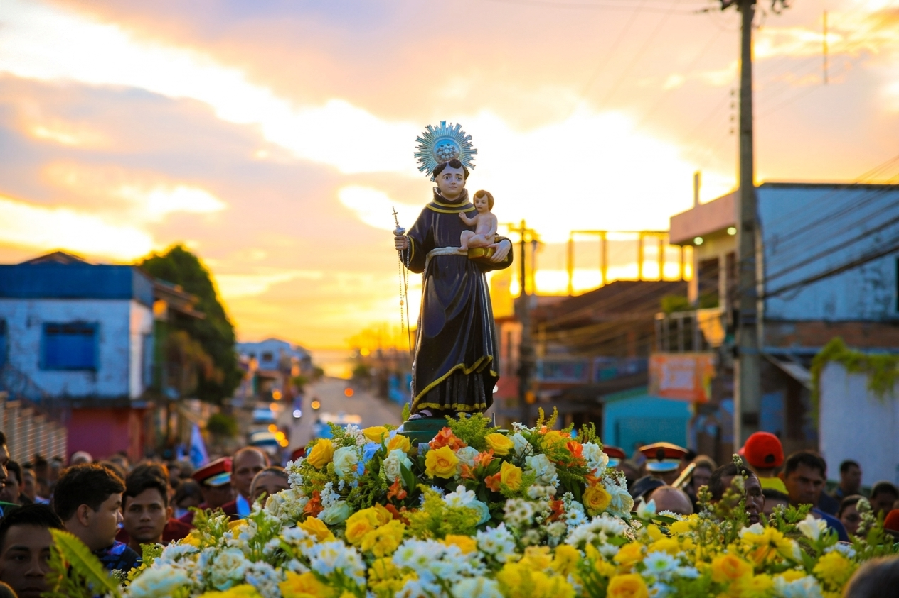
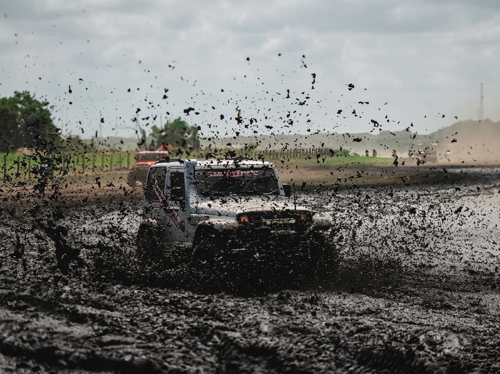
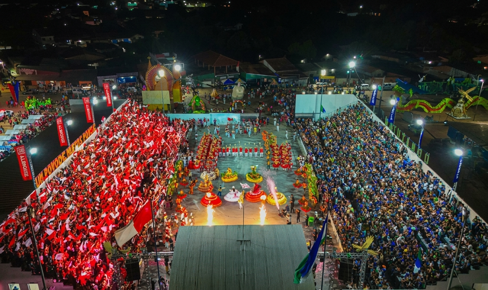
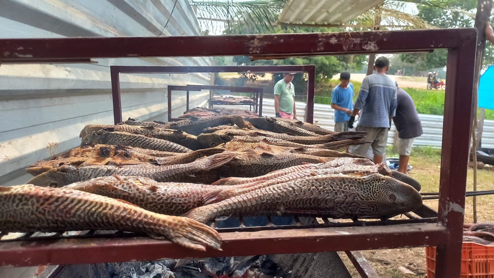
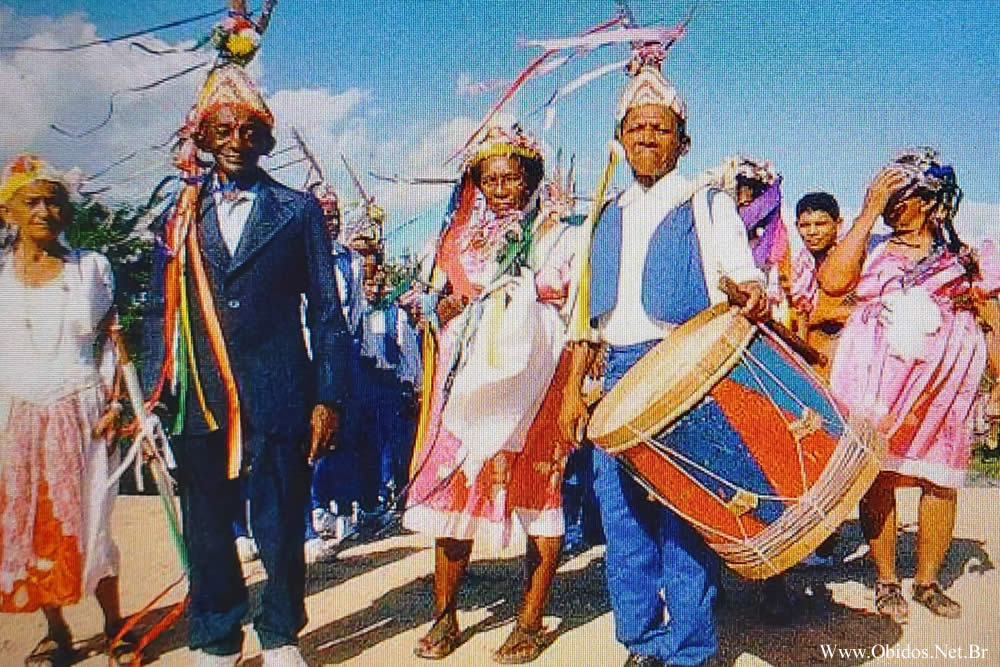

Eventos e Cultura
O calendário cultural alenquerense
De janeiro a dezembro, Alenquer vive de festa em festa. Clique em "Saiba mais" para conhecer cada evento em detalhe.

Época momesca · blocos tradicionais
Carnaval
A disputa animada e afetuosa entre blocos tradicionais que arrastam multidões pelas ruas da cidade.
Saiba mais
Padroeiro da cidade · Círio e caminhada de fé
Festividade de Santo Antônio
O Círio em honra a Santo Antônio e a tradicional caminhada de fé de 15 km.
Saiba mais
Aventura e integração regional
Festival do Raid
Competição de aventura e resistência que celebra a paisagem natural de Alenquer.
Saiba mais
Rivalidade histórica: Zé Matuto x Matutando
Festival Folclórico de Alenquer
O maior evento folclórico da cidade, com a disputa histórica entre Zé Matuto e Matutando.
Saiba mais
Gastronomia e tradição ribeirinha
Festival do Acari
Festividade dedicada ao acari, peixe típico da região, com gastronomia e tradição local.
Saiba mais
Manifestação cultural de raiz
Marambiré
Uma das manifestações culturais mais tradicionais de Alenquer, com ritmos e danças de geração em geração.
Saiba mais